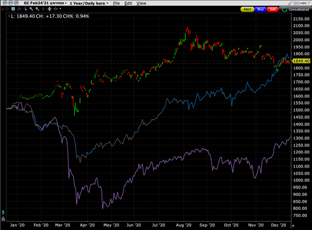
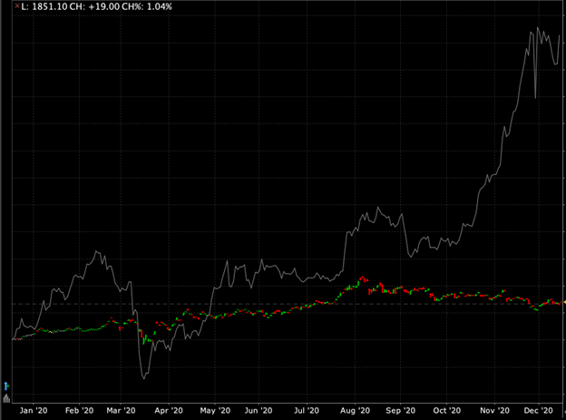
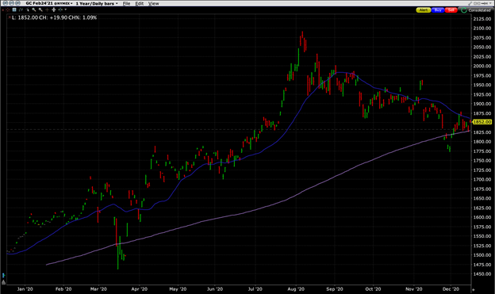

Posted December 15, 2020 at 12:54 pm
Archived 2026-10-06. Recovered matching article from the current official IBKR Campus. Article text, figures and source disclosures retained; discussion, site navigation and promotional controls omitted. Embedded links may require internet.William Shakespeare is always a solid source for a quote. This one is particularly apt to describe the current state of trading for the market’s favorite precious metal. With other commodities like oil and copper showing strength in recent weeks, gold has been a notable laggard. The chart below tells that story better than I can:

Source: Interactive Brokers TWS
During the stock markets’ meltdown in March, gold did a reasonable job of providing a hedge. It fell, but by less than major equity indices. The downdrafts in oil and copper were far more dramatic when global economic activity ground to a halt. When global central banks and governments implemented measures the stablilze the world economy, all three of those commodities found a bottom. We saw a fairly synchronized rise throughout the summer as the unprecedented liquidity injections raised a wide range of asset prices.
A change occurred in the August-September period. Gold and oil peaked, while copper continued its advance. In November, oil reversed course and moved higher while copper futures raced upward. Yet gold continued the downtrend that began in August. If the stories about massive commodity acquisitions by the Chinese government are correct, it makes perfect sense that copper and oil would outperform gold. A nation that is stockpiling resources would cause the prices of those commodities to rise. Copper and oil are crucial to the modern industrial economy. Gold is not (despite being an excellent electrical conductor).
Underperformance is one thing, an outright decline another entirely. The conditions for a stronger gold price were in place in August. In fact, they remain in place now. Interest rates remain near zero, meaning that the opportunity cost for holding non-interest-bearing assets like precious metals is minimal. A weaker dollar and higher commodity prices should also provide support to the price of gold. Both of those conditions have been in place in recent months, yet gold continues to decline. Why?
One answer could be that gold is not really all that superior to fiat currencies. Gold’s special status is historic. It has been a store of value for millennia. It was scarce, beautiful, malleable and fungible, giving it a special status among royalty and the masses alike. It was both a currency and a backer of currencies and always a store of wealth. One of the arguments for holding gold has been that its scarcity and tangibility make it an antidote for the fiat currencies that dominate world commerce. Yet gold’s special status is more historic than tangible. If its value is primarily one of perception, how does it actually differentiate itself from the fiat currencies that its ardent backers render inferior? Without a valid answer to that question – one that I am unable to offer – the case for owning gold is diminished.
If one fears inflation from rampant money printing, the scarcity of gold is meant to provide an antidote. Gold has been an excellent source of financial security for those who live in countries that have currencies that are subject to period devaluation (usually because they are required to borrow in non-native currencies). The results are for more nebulous for those of us who reside in countries that are able to borrow in local currencies. The Federal Reserve, Bank of Japan, European Central Bank and a host of others have been on borrowing binges yet find themselves unable to stoke inflation in anything other than financial assets. In theory, gold should be a major beneficiary. In reality, investors are finding greater returns elsewhere.
Another answer could be that gold has been supplanted as an alternative investment. Can you think of a more modern store of wealth that has a limited supply and is fungible? The chart below should give you a hint:

Source: Interactive Brokers TWS
If gold has historically captured the imaginations of investors, cryptocurrencies – specifically bitcoin – has dominated the current mind space. In recent months, if oil was a solid investment, and copper a wonderful performer, what adjective best applies to the autumn rocket ride of bitcoin? The conditions that made a solid, yet unrewarded, case for gold in recent months applied to bitcoin as well. Those conditions were rewarded handsomely, almost insanely, especially as companies like PayPal (PYPL) began to accept bitcoin for payment. It is not unreasonable to assert that many investors moved their money into the hotter investment, providing a boost to the cryptocurrency and a drag to the precious metal.
Those of us who trade or invest in gold must consider the future prospects for the yellow metal. Commodity traders often follow trends, and the short- and medium-term trends are not particularly promising. Note the graph below:

Source: Interactive Brokers TWS
The February 2021 futures are pictured above. The 30-day moving average turned lower in September and has provided resistance ever since. We have seen a pattern of lower highs and lows. That typically defines a downtrend. The 200-day moving average is still pointing upward and has provided some support during declines. We now find ourselves near a potentially crucial level. The 30-day is in danger of breaking below the 200-day, as is the future itself. Barring a meaningful bounce, that is the sort of setup that could provide additional fuel to the recent downtrend.
There have always been valid reasons to own gold, and it is not clear that those reasons have become invalid. But it is important for those who trade the commodity to be realistic about its fundamental and technical prospects, especially with its recent underperformance.
New to Interactive Brokers?
Open AccountAlready an Interactive Brokers Client?
Request Trading PermissionThe analysis in this material is provided for information only and is not and should not be construed as an offer to sell or the solicitation of an offer to buy any security. To the extent that this material discusses general market activity, industry or sector trends or other broad-based economic or political conditions, it should not be construed as research or investment advice. To the extent that it includes references to specific securities, commodities, currencies, or other instruments, those references do not constitute a recommendation by IBKR to buy, sell or hold such investments. This material does not and is not intended to take into account the particular financial conditions, investment objectives or requirements of individual customers. Before acting on this material, you should consider whether it is suitable for your particular circumstances and, as necessary, seek professional advice.
The views and opinions expressed herein are those of the author and do not necessarily reflect the views of Interactive Brokers, its affiliates, or its employees.
There is a substantial risk of loss in foreign exchange trading. The settlement date of foreign exchange trades can vary due to time zone differences and bank holidays. When trading across foreign exchange markets, this may necessitate borrowing funds to settle foreign exchange trades. The interest rate on borrowed funds must be considered when computing the cost of trades across multiple markets.
TRADING IN BITCOIN FUTURES IS ESPECIALLY RISKY AND IS ONLY FOR CLIENTS WITH A HIGH RISK TOLERANCE AND THE FINANCIAL ABILITY TO SUSTAIN LOSSES. More information about the risk of trading Bitcoin products can be found on the IBKR website. If you're new to bitcoin, or futures in general, see Introduction to Bitcoin Futures.
Futures are not suitable for all investors. The amount you may lose may be greater than your initial investment. Before trading futures, please read the CFTC Risk Disclosure. A copy and additional information are available at ibkr.com.